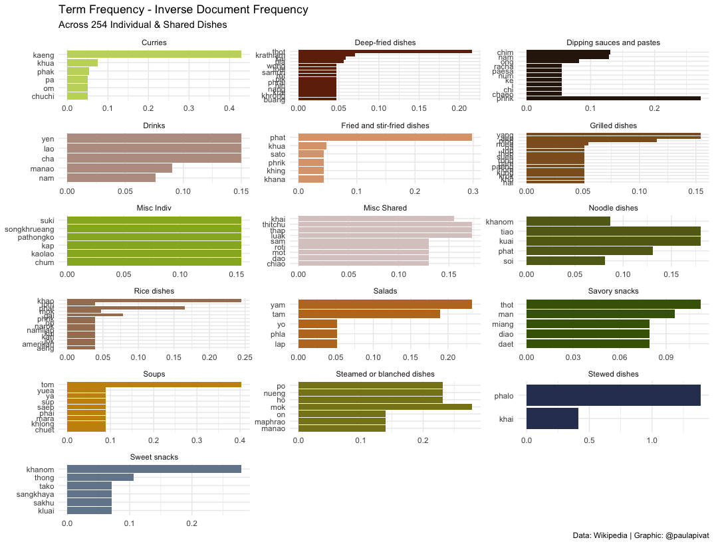

Pad Thai is a Terrible Choice
Using Python and R to explore Thai Food
Table of contents
Overview
“Let’s order Thai.”
“Great, what’s your go-to dish?”
“Pad Thai.”
This has bugged me for years and is the genesis for this project.
People need to know they have other choices aside from Pad Thai. Pad Thai is one of 53 individual dishes and stopping there risks missing out on at least 201 shared Thai dishes (source: wikipedia).
This project is an opportunity to build a data set of Thai dishes by scraping tables off Wikipedia. We will use Python for web scraping and R for visualization. Web scraping is done in Beautiful Soup (Python) and pre-processed further with dplyr and visualized with ggplot2.
Furthermore, we’ll use the tidytext package in R to explore the names of Thai dishes (in English) to see if we can learn some interest things from text data.
Finally, there is an opportunity to make an open source contribution.
The project repo is here.
Exploratory_Questions
The purpose of this analysis is to generate questions.
Because exploratory analysis is iterative, these questions were generated in the process of manipulating and visualizing data. We can use these questions to structure the rest of the post:
- How might we organized Thai dishes?
- What is the best way to organized the different dishes?
- Which raw material(s) are most popular?
- Which raw materials are most important?
- Could you learn about Thai food just from the names of the dishes?
Web_Scraping
We scraped over 300 Thai dishes. For each dish, we got:
- Thai name
- Thai script
- English name
- Region
- Description
First, we’ll use the following Python libraries/modules:
import requests
from bs4 import BeautifulSoup
import urllib.request
import urllib.parse
import urllib.error
import ssl
import pandas as pd
We’ll use requests to send an HTTP requests to the wikipedia url we need. We’ll access network sockets using ‘secure sockets layer’ (SSL). Then we’ll read in the html data to parse it with Beautiful Soup.
Before using Beautiful Soup, we want to understand the structure of the page (and tables) we want to scrape under inspect element on the browser (note: I used Chrome). We can see that we want the table tag, along with class of wikitable sortable.

The main function we’ll use from Beautiful Soup is findAll() and the three parameters are th (Header Cell in HTML table), tr (Row in HTML table) and td (Standard Data Cell).
First, we’ll save the table headers in a list, which we’ll use when creating an empty dictionary to store the data we need.
header = [item.text.rstrip() for item in all_tables[0].findAll('th')]
table = dict([(x, 0) for x in header])
Initially, we want to scrape one table, knowing that we’ll need to repeat the process for all 16 tables. Therefore we’ll use a nested loop. Because all tables have 6 columns, we’ll want to create 6 empty lists.
We’ll scrape through all table rows tr and check for 6 cells (which we should have for 6 columns), then we’ll append the data to each empty list we created.
# loop through all 16 tables
a = [0, 1, 2, 3, 4, 5, 6, 7, 8, 9, 10, 11, 12, 13, 14, 15]
# 6 empty list (for 6 columns) to store data
a1 = []
a2 = []
a3 = []
a4 = []
a5 = []
a6 = []
# nested loop for looping through all 16 tables, then all tables individually
for i in a:
for row in all_tables[i].findAll('tr'):
cells = row.findAll('td')
if len(cells) == 6:
a1.append([string for string in cells[0].strings])
a2.append(cells[1].find(text=True))
a3.append(cells[2].find(text=True))
a4.append(cells[3].find(text=True))
a5.append(cells[4].find(text=True))
a6.append([string for string in cells[5].strings])
You’ll note the code for a1 and a6 are slightly different. In retrospect, I found that cells[0].find(text=True) did not yield certain texts, particularly if they were links, therefore a slight adjustment is made.
The strings tag returns a NavigableString type object while text returns a unicode object (see
stack overflow explanation).
After we’ve scrapped the data, we’ll need to store the data in a dictionary before converting to data frame:
# create dictionary
table = dict([(x, 0) for x in header])
# append dictionary with corresponding data list
table['Thai name'] = a1
table['Thai script'] = a2
table['English name'] = a3
table['Image'] = a4
table['Region'] = a5
table['Description'] = a6
# turn dict into dataframe
df_table = pd.DataFrame(table)
For a1 and a6, we need to do an extra step of joining the strings together, so I’ve created two additional corresponding columns, Thai name 2 and Description2:
# Need to Flatten Two Columns: 'Thai name' and 'Description'
# Create two new columns
df_table['Thai name 2'] = ""
df_table['Description2'] = ""
# join all words in the list for each of 328 rows and set to thai_dishes['Description2'] column
# automatically flatten the list
df_table['Description2'] = [
' '.join(cell) for cell in df_table['Description']]
df_table['Thai name 2'] = [
' '.join(cell) for cell in df_table['Thai name']]
After we’ve scrapped all the data and converted from dictionary to data frame, we’ll write to CSV to prepare for data cleaning in R (note: I saved the csv as thai_dishes.csv, but you can choose a different name).
Data_Cleaning
Data cleaning is typically non-linear.
We’ll manipulate the data to explore, learn about the data and see that certain things need cleaning or, in some cases, going back to Python to re-scrape. The columns a1 and a6 were scraped differently from other columns due to missing data found during exploration and cleaning.
For certain links, using .find(text=True) did not work as intended, so a slight adjustment was made.
For this post, R is the tool of choice for cleaning the data.
Here are other data cleaning tasks:
- Changing column names (snake case)
# read data
df <- read_csv("thai_dishes.csv")
# change column name
df <- df %>%
rename(
Thai_name = `Thai name`,
Thai_name_2 = `Thai name 2`,
Thai_script = `Thai script`,
English_name = `English name`
)
- Remove newline escape sequence (\n)
# remove \n from all columns ----
df$Thai_name <- gsub("[\n]", "", df$Thai_name)
df$Thai_name_2 <- gsub("[\n]", "", df$Thai_name_2)
df$Thai_script <- gsub("[\n]", "", df$Thai_script)
df$English_name <- gsub("[\n]", "", df$English_name)
df$Image <- gsub("[\n]", "", df$Image)
df$Region <- gsub("[\n]", "", df$Region)
df$Description <- gsub("[\n]", "", df$Description)
df$Description2 <- gsub("[\n]", "", df$Description2)
- Add/Mutate new columns (major_groupings, minor_groupings):
# Add Major AND Minor Groupings ----
df <- df %>%
mutate(
major_grouping = as.character(NA),
minor_grouping = as.character(NA)
)
- Edit rows for missing data in Thai_name column: 26, 110, 157, 234-238, 240, 241, 246
Note: This was only necessary the first time round, after the changes are made to how I scraped a1 and a6, this step is no longer necessary:
# If necessary; may not need to do this after scraping a1 and a6 - see above
# Edit Rows for missing Thai_name
df[26,]$Thai_name <- "Khanom chin nam ngiao"
df[110,]$Thai_name <- "Lap Lanna"
df[157,]$Thai_name <- "Kai phat khing"
df[234,]$Thai_name <- "Nam chim chaeo"
df[235,]$Thai_name <- "Nam chim kai"
df[236,]$Thai_name <- "Nam chim paesa"
df[237,]$Thai_name <- "Nam chim sate"
df[238,]$Thai_name <- "Nam phrik i-ke"
df[240,]$Thai_name <- "Nam phrik kha"
df[241,]$Thai_name <- "Nam phrik khaep mu"
df[246,]$Thai_name <- "Nam phrik pla chi"
- save to “edit_thai_dishes.csv”
# Write new csv to save edits made to data frame
write_csv(df, "edit_thai_dishes.csv")
Data_Visualization
There are several ways to visualize the data. Because we want to communicate the diversity of Thai dishes, aside from Pad Thai, we want a visualization that captures the many, many options.
I opted for a dendrogram. This graph assumes hierarchy within the data, which fits our project because we can organize the dishes in grouping and sub-grouping.
How might we organized Thai dishes?
We first make a distinction between individual and shared dishes to show that Pad Thai is not even close to being the best individual dish. And, in fact, more dishes fall under the shared grouping.
To avoid cramming too much data into one visual, we’ll create two separate visualizations for individual vs. shared dishes.
Here is the first dendrogram representing 52 individual dish alternatives to Pad Thai.

Creating a dendrogram requires using the ggraph and igraph libraries. First, we’ll load the libraries and sub-set our data frame by filtering for Individual Dishes:
df <- read_csv("edit_thai_dishes.csv")
library(ggraph)
library(igraph)
df %>%
select(major_grouping, minor_grouping, Thai_name, Thai_script) %>%
filter(major_grouping == 'Individual dishes') %>%
group_by(minor_grouping) %>%
count()
We create edges and nodes (i.e., from and to) to create the sub-groupings within Individual Dishes (i.e., Rice, Noodles and Misc):
# Individual Dishes ----
# data: edge list
d1 <- data.frame(from="Individual dishes", to=c("Misc Indiv", "Noodle dishes", "Rice dishes"))
d2 <- df %>%
select(minor_grouping, Thai_name) %>%
slice(1:53) %>%
rename(
from = minor_grouping,
to = Thai_name
)
edges <- rbind(d1, d2)
# plot dendrogram (idividual dishes)
indiv_dishes_graph <- graph_from_data_frame(edges)
ggraph(indiv_dishes_graph, layout = "dendrogram", circular = FALSE) +
geom_edge_diagonal(aes(edge_colour = edges$from), label_dodge = NULL) +
geom_node_text(aes(label = name, filter = leaf, color = 'red'), hjust = 1.1, size = 3) +
geom_node_point(color = "whitesmoke") +
theme(
plot.background = element_rect(fill = '#343d46'),
panel.background = element_rect(fill = '#343d46'),
legend.position = 'none',
plot.title = element_text(colour = 'whitesmoke', face = 'bold', size = 25),
plot.subtitle = element_text(colour = 'whitesmoke', face = 'bold'),
plot.caption = element_text(color = 'whitesmoke', face = 'italic')
) +
labs(
title = '52 Alternatives to Pad Thai',
subtitle = 'Individual Thai Dishes',
caption = 'Data: Wikipedia | Graphic: @paulapivat'
) +
expand_limits(x = c(-1.5, 1.5), y = c(-0.8, 0.8)) +
coord_flip() +
annotate("text", x = 47, y = 1, label = "Miscellaneous (7)", color = "#7CAE00")+
annotate("text", x = 31, y = 1, label = "Noodle Dishes (24)", color = "#00C08B") +
annotate("text", x = 8, y = 1, label = "Rice Dishes (22)", color = "#C77CFF") +
annotate("text", x = 26, y = 2, label = "Individual\nDishes", color = "#F8766D")
What is the best way to organized the different dishes?
There are approximately 4X as many shared dishes as individual dishes, so the dendrogram should be circular to fit the names of all dishes in one graphic.
A wonderful resource I use regularly for these types of visuals is the R Graph Gallery. There was a slight issue in how the text angles were calculated so I submitted a PR to fix.
Perhaps distinguishing between individual and shared dishes is too crude, within the dendrogram for 201 shared Thai dishes, we can see further sub-groupings including Curries, Sauces/Pastes, Steamed, Grilled, Deep-Fried, Fried & Stir-Fried, Salads, Soups and other Misc:

# Shared Dishes ----
df %>%
select(major_grouping, minor_grouping, Thai_name, Thai_script) %>%
filter(major_grouping == 'Shared dishes') %>%
group_by(minor_grouping) %>%
count() %>%
arrange(desc(n))
d3 <- data.frame(from="Shared dishes", to=c("Curries", "Soups", "Salads",
"Fried and stir-fried dishes", "Deep-fried dishes", "Grilled dishes",
"Steamed or blanched dishes", "Stewed dishes", "Dipping sauces and pastes", "Misc Shared"))
d4 <- df %>%
select(minor_grouping, Thai_name) %>%
slice(54:254) %>%
rename(
from = minor_grouping,
to = Thai_name
)
edges2 <- rbind(d3, d4)
# create a vertices data.frame. One line per object of hierarchy
vertices = data.frame(
name = unique(c(as.character(edges2$from), as.character(edges2$to)))
)
# add column with group of each name. Useful to later color points
vertices$group = edges2$from[ match(vertices$name, edges2$to)]
# Add information concerning the label we are going to add: angle, horizontal adjustment and potential flip
# calculate the ANGLE of the labels
vertices$id=NA
myleaves=which(is.na(match(vertices$name, edges2$from)))
nleaves=length(myleaves)
vertices$id[myleaves] = seq(1:nleaves)
vertices$angle = 360 / nleaves * vertices$id + 90
# calculate the alignment of labels: right or left
vertices$hjust<-ifelse( vertices$angle < 275, 1, 0)
# flip angle BY to make them readable
vertices$angle<-ifelse(vertices$angle < 275, vertices$angle+180, vertices$angle)
# plot dendrogram (shared dishes)
shared_dishes_graph <- graph_from_data_frame(edges2)
ggraph(shared_dishes_graph, layout = "dendrogram", circular = TRUE) +
geom_edge_diagonal(aes(edge_colour = edges2$from), label_dodge = NULL) +
geom_node_text(aes(x = x*1.15, y=y*1.15, filter = leaf, label=name, angle = vertices$angle, hjust= vertices$hjust, colour= vertices$group), size=2.7, alpha=1) +
geom_node_point(color = "whitesmoke") +
theme(
plot.background = element_rect(fill = '#343d46'),
panel.background = element_rect(fill = '#343d46'),
legend.position = 'none',
plot.title = element_text(colour = 'whitesmoke', face = 'bold', size = 25),
plot.subtitle = element_text(colour = 'whitesmoke', margin = margin(0,0,30,0), size = 20),
plot.caption = element_text(color = 'whitesmoke', face = 'italic')
) +
labs(
title = 'Thai Food is Best Shared',
subtitle = '201 Ways to Make Friends',
caption = 'Data: Wikipedia | Graphic: @paulapivat'
) +
#expand_limits(x = c(-1.5, 1.5), y = c(-0.8, 0.8)) +
expand_limits(x = c(-1.5, 1.5), y = c(-1.5, 1.5)) +
coord_flip() +
annotate("text", x = 0.4, y = 0.45, label = "Steamed", color = "#F564E3") +
annotate("text", x = 0.2, y = 0.5, label = "Grilled", color = "#00BA38") +
annotate("text", x = -0.2, y = 0.5, label = "Deep-Fried", color = "#DE8C00") +
annotate("text", x = -0.4, y = 0.1, label = "Fried &\n Stir-Fried", color = "#7CAE00") +
annotate("text", x = -0.3, y = -0.4, label = "Salads", color = "#00B4F0") +
annotate("text", x = -0.05, y = -0.5, label = "Soups", color = "#C77CFF") +
annotate("text", x = 0.3, y = -0.5, label = "Curries", color = "#F8766D") +
annotate("text", x = 0.5, y = -0.1, label = "Misc", color = "#00BFC4") +
annotate("text", x = 0.5, y = 0.1, label = "Sauces\nPastes", color = "#B79F00")
Text_Mining
Which raw material(s) are most popular?
One way to answer this question is to use text mining to tokenize by either word and count the words by frequency as one measure of popularity.
In the below bar chart, we see frequency of words across all Thai Dishes. Mu (หมู) which means pork in Thai appears most frequently across all dish types and sub-grouping. Next we have kaeng (แกง) which means curry. Phat (ผัด) comings in third suggesting “stir-fry” is a popular cooking mode.
As we can see not all words refer to raw materials, so we may not be able to answer this question directly.

library(tidytext)
library(scales)
# new csv file after data cleaning (see above)
df <- read_csv("../web_scraping/edit_thai_dishes.csv")
df %>%
select(Thai_name, Thai_script) %>%
# can substitute 'word' for ngrams, sentences, lines
unnest_tokens(ngrams, Thai_name) %>%
# to reference thai spelling: group_by(Thai_script)
group_by(ngrams) %>%
tally(sort = TRUE) %>% # alt: count(sort = TRUE)
filter(n > 9) %>%
# visualize
# pipe directly into ggplot2, because using tidytools
ggplot(aes(x = n, y = reorder(ngrams, n))) +
geom_col(aes(fill = ngrams)) +
scale_fill_manual(values = c(
"#c3d66b",
"#70290a",
"#2f1c0b",
"#ba9d8f",
"#dda37b",
"#8f5e23",
"#96b224",
"#dbcac9",
"#626817",
"#a67e5f",
"#be7825",
"#446206",
"#c8910b",
"#88821b",
"#313d5f",
"#73869a",
"#6f370f",
"#c0580d",
"#e0d639",
"#c9d0ce",
"#ebf1f0",
"#50607b"
)) +
theme_minimal() +
theme(legend.position = "none") +
labs(
x = "Frequency",
y = "Words",
title = "Frequency of Words in Thai Cuisine",
subtitle = "Words appearing at least 10 times in Individual or Shared Dishes",
caption = "Data: Wikipedia | Graphic: @paulapivat"
)
We can also see words common to both Individual and Shared Dishes. We see other words like nuea (beef), phrik (chili) and kaphrao (basil leaves).
# frequency for Thai_dishes (Major Grouping) ----
# comparing Individual and Shared Dishes (Major Grouping)
thai_name_freq <- df %>%
select(Thai_name, Thai_script, major_grouping) %>%
unnest_tokens(ngrams, Thai_name) %>%
count(ngrams, major_grouping) %>%
group_by(major_grouping) %>%
mutate(proportion = n / sum(n)) %>%
select(major_grouping, ngrams, proportion) %>%
spread(major_grouping, proportion) %>%
gather(major_grouping, proportion, c(`Shared dishes`)) %>%
select(ngrams, `Individual dishes`, major_grouping, proportion)
# Expect warming message about missing values
ggplot(thai_name_freq, aes(x = proportion, y = `Individual dishes`,
color = abs(`Individual dishes` - proportion))) +
geom_abline(color = 'gray40', lty = 2) +
geom_jitter(alpha = 0.1, size = 2.5, width = 0.3, height = 0.3) +
geom_text(aes(label = ngrams), check_overlap = TRUE, vjust = 1.5) +
scale_x_log10(labels = percent_format()) +
scale_y_log10(labels = percent_format()) +
scale_color_gradient(limits = c(0, 0.01),
low = "red", high = "blue") + # low = "darkslategray4", high = "gray75"
theme_minimal() +
theme(legend.position = "none",
legend.text = element_text(angle = 45, hjust = 1)) +
labs(y = "Individual Dishes",
x = "Shared Dishes",
color = NULL,
title = "Comparing Word Frequencies in the names Thai Dishes",
subtitle = "Individual and Shared Dishes",
caption = "Data: Wikipedia | Graphics: @paulapivat")
Which raw materials are most important?
We can only learn so much from frequency, so text mining practitioners have created term frequency - inverse document frequency to better reflect how important a word is in a document or corpus (further details here).
Again, the words don’t necessarily refer to raw materials, so this question can’t be fully answered directly here.

Could you learn about Thai food just from the names of the dishes?
The short answer is “yes”.
We learned just from frequency and “term frequency - inverse document frequency” not only the most frequent words, but the relative importance within the current set of words that we have tokenized with tidytext. This informs us of not only popular raw materials (Pork), but also dish types (Curries) and other popular mode of preparation (Stir-Fry).
We can even examine the network of relationships between words. Darker arrows suggest a stronger relationship between pairs of words, for example “nam phrik” is a strong pairing. This means “chili sauce” in Thai and suggests the important role that it plays across many types of dishes.
We learned above that “mu” (pork) appears frequently. Now we see that “mu” and “krop” are more related than other pairings (note: “mu krop” means “crispy pork”). We also saw above that “khao” appears frequently in Rice dishes. This alone is not surprising as “khao” means rice in Thai, but we see here “khao phat” is strongly related suggesting that fried rice (“khao phat”) is quite popular.

# Visualizing a network of Bi-grams with {ggraph} ----
library(igraph)
library(ggraph)
set.seed(2021)
thai_dish_bigram_counts <- df %>%
select(Thai_name, minor_grouping) %>%
unnest_tokens(bigram, Thai_name, token = "ngrams", n = 2) %>%
separate(bigram, c("word1", "word2"), sep = " ") %>%
count(word1, word2, sort = TRUE)
# filter for relatively common combinations (n > 2)
thai_dish_bigram_graph <- thai_dish_bigram_counts %>%
filter(n > 2) %>%
graph_from_data_frame()
# polishing operations to make a better looking graph
a <- grid::arrow(type = "closed", length = unit(.15, "inches"))
set.seed(2021)
ggraph(thai_dish_bigram_graph, layout = "fr") +
geom_edge_link(aes(edge_alpha = n), show.legend = FALSE,
arrow = a, end_cap = circle(.07, 'inches')) +
geom_node_point(color = "dodgerblue", size = 5, alpha = 0.7) +
geom_node_text(aes(label = name), vjust = 1, hjust = 1) +
labs(
title = "Network of Relations between Word Pairs",
subtitle = "{ggraph}: common nodes in Thai food",
caption = "Data: Wikipedia | Graphics: @paulapivat"
) +
theme_void()
Finally, we may be interested in word relationships within individual dishes.
The below graph shows a network of word pairs with moderate-to-high correlations. We can see certain words clustered near each other with relatively dark lines: kaeng (curry), pet (spicy), wan (sweet), khiao (green curry), phrik (chili) and mu (pork). These words represent a collection of ingredient, mode of cooking and description that are generally combined.

set.seed(2021)
# Individual Dishes
individual_dish_words <- df %>%
select(major_grouping, Thai_name) %>%
filter(major_grouping == 'Individual dishes') %>%
mutate(section = row_number() %/% 10) %>%
filter(section > 0) %>%
unnest_tokens(word, Thai_name) # assume no stop words
individual_dish_cors <- individual_dish_words %>%
group_by(word) %>%
filter(n() >= 2) %>% # looking for co-occuring words, so must be 2 or greater
pairwise_cor(word, section, sort = TRUE)
individual_dish_cors %>%
filter(correlation < -0.40) %>%
graph_from_data_frame() %>%
ggraph(layout = "fr") +
geom_edge_link(aes(edge_alpha = correlation, size = correlation), show.legend = TRUE) +
geom_node_point(color = "green", size = 5, alpha = 0.5) +
geom_node_text(aes(label = name), repel = TRUE) +
labs(
title = "Word Pairs in Individual Dishes",
subtitle = "{ggraph}: Negatively correlated (r = -0.4)",
caption = "Data: Wikipedia | Graphics: @paulapivat"
) +
theme_void()
Summary
We have completed an exploratory data project where we scraped, clean, manipulated and visualized data using a combination of Python and R. We also used the tidytext package for basic text mining task to see if we could gain some insights into Thai cuisine using words from dish names scraped off Wikipedia.
For more content on data science, R, Python, SQL and more, find me on Twitter.
paulapivat
web3 | Bankless DAO
My interests include data science, machine learning and R/Python programming.